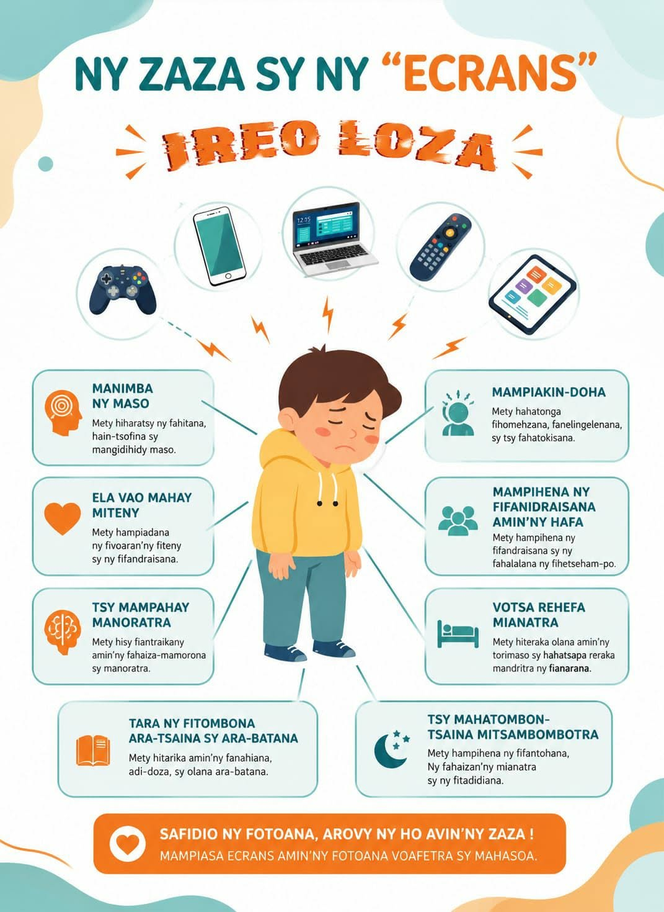

La petite enfance et le numérique : quels sont les risques ?
Aujourd’hui, les écrans font partie de la vie quotidienne. Téléphone, télévision, tablette, ordinateur ou jeux vidéo occupent une place importante dans les foyers. Ils peuvent être utiles pour apprendre, communiquer ou se divertir. Cependant, lorsqu’ils sont utilisés trop longtemps ou sans contrôle, ils peuvent avoir des conséquences négatives sur le développement de l’enfant.
Tout d’abord, une exposition excessive aux écrans peut nuire à la santé physique. L’enfant qui passe trop de temps devant un écran fatigue rapidement ses yeux. Il peut ressentir des picotements, une baisse de concentration ou des maux de tête. En plus de cela, rester longtemps assis devant un écran réduit l’activité physique. Cela peut entraîner une mauvaise posture, de la fatigue et parfois même un retard dans le développement corporel.
Ensuite, les écrans peuvent perturber le développement intellectuel et scolaire de l’enfant. Lorsqu’un enfant passe beaucoup de temps devant un téléphone ou une tablette, il lit moins, écrit moins et réfléchit moins par lui-même. Cela peut ralentir l’apprentissage, diminuer la mémoire et réduire la capacité de concentration. À l’école, l’enfant peut alors avoir plus de difficultés à suivre les cours, à retenir les leçons ou à faire ses devoirs correctement.
Les écrans ont aussi un impact sur le langage et les relations sociales. Un jeune enfant a besoin de parler, d’écouter, de jouer et d’échanger avec les autres pour bien développer son langage. Si les écrans prennent trop de place, l’enfant risque de parler plus tard, de moins bien s’exprimer ou de moins communiquer avec son entourage. Il peut aussi s’isoler, préférer rester seul devant son écran et avoir plus de mal à comprendre les émotions ou à créer de vrais liens avec les autres.
Un autre danger important concerne le sommeil. L’usage des écrans, surtout le soir, peut empêcher l’enfant de bien dormir. La lumière des écrans perturbe le cerveau et retarde l’endormissement. Un enfant qui dort mal se réveille fatigué, manque d’énergie et a du mal à se concentrer pendant la journée. Cela influence directement son humeur, son comportement et ses résultats scolaires.
Face à ces risques, il est essentiel que les parents encadrent l’usage des écrans. Il ne s’agit pas d’interdire totalement, mais de fixer des limites claires : réduire le temps d’écran, éviter les écrans avant de dormir, choisir des contenus adaptés à l’âge de l’enfant et encourager d’autres activités comme la lecture, les jeux en famille, le sport ou les sorties. L’accompagnement des adultes est très important pour apprendre à l’enfant à utiliser les écrans de manière équilibrée.
En conclusion, les écrans ne sont pas mauvais en eux-mêmes, mais leur excès peut devenir dangereux pour l’enfant. Ils peuvent affecter la santé, le sommeil, les apprentissages, le langage et les relations sociales. C’est pourquoi il faut apprendre à utiliser les écrans avec modération, intelligence et vigilance, afin de protéger le bien-être et l’avenir des enfants.